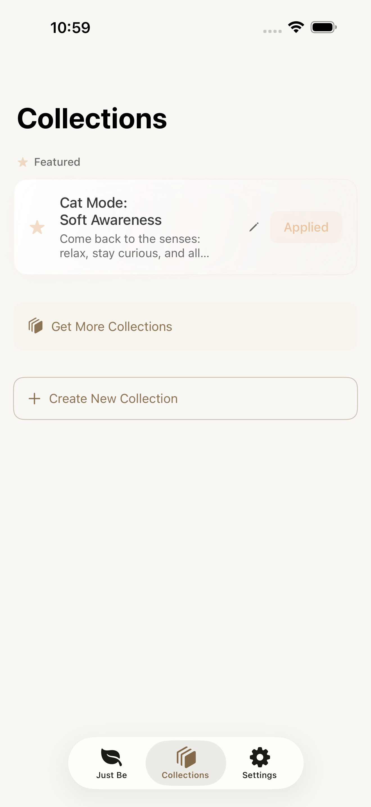
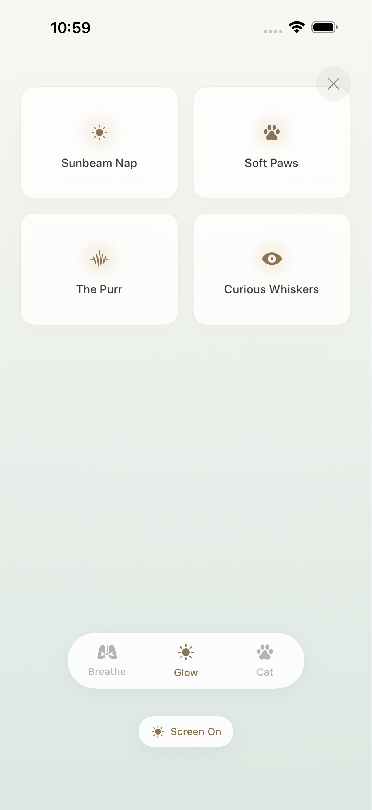
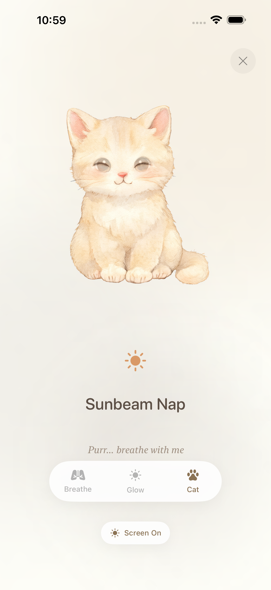
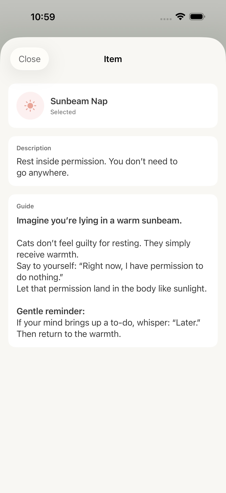

The quality of your being shapes the quality of your life.
01
Choose Your State
JustBe offers curated "Collections" for different moments in your life. These are not task lists, but gentle responses to your current state.
Try Daily Core for a foundational practice, or The Anchor when you need stability.

02
Be With Yourself
Tap Start Session. This is not a test; there are no right answers. Simply allow yourself to be immersed in the light and sound.


Tap the screen to hide the interface, leaving only pure presence.
03
Explore The Practices
During a session, practice items will appear on screen. Tap any text to view the full guidance.

Each practice includes a Description and a full Guide to help you understand and experience it deeply.
Gentle Reminder
JustBe removes all "stressors": no streaks, no scores, no red notification dots. Come back at your own rhythm, whenever you need.
The Four Pillars
Our nervous system speaks different languages. JustBe translates these into four dimensions:
Body
Green · Grounding & Connection When anxiety makes us feel untethered, the body is our best anchor. Reclaim the tangible sense of "I am here" through Proprioception.
Breath
Blue · Flow & Regulation Breath is the bridge between body and mind. By shifting your breathing rhythm, you directly signal "safety" to your vagus nerve.
Heart
Pink · Warmth & Compassion The antidote to inner criticism isn't harsher discipline, but warmth. Heart practices invite you to treat yourself like a dear friend.
Insight
Purple · Clarity & Space Step back and watch thoughts pass like clouds. This isn't about "stopping thought," but about "not being a victim of it."
Deconstructing the Journeys
Each Collection is a carefully choreographed psychological ritual with its own unique flow.
☀️
Daily Core
A simple hello to yourself.
This is not a task list, but a ritual for "foundational stability." Switching from autopilot back to conscious presence.
The Flow:
1. ●Body First: Bring attention home
2. ●3-Breath Reset: The pause button; break autopilot
3. ●Self-Trust: Build inner confidence
4. ●Ground & Stack: Physical stability
🐱
Cat Mode
The art of permission.
"In a dog's world, humans are kings; in a cat's world, cats are kings."
This reminds us: you don't need to please the world to be worthy. Learn from a cat. You don't need to "focus harder," just "be softer."
The Flow:
1. ●Soft Paws: Gentle contact, supported by earth
2. ●The Purr: Vibrational regulation
3. ●Sunbeam Nap: Bathe in the right to do nothing
4. ●Curious Whiskers: Non-judgmental sensing
⚓
The Anchor
Anchor in the waves.
When the prefrontal cortex goes offline, we don't use logic; we use sensation. Physiology first, psychology second.
The Flow:
1. ●The Shake Out: Discharge nervous energy
2. ●See the Spot: Relocate and contain
3. ●Physiological Sigh: The built-in off switch
4. ●I'm Here: Companionship, not fixing
🌙
Night Sanctuary
A safe space to let go.
Sleep is not something you "do," but something you "allow." We don't fight insomnia; we create conditions for "downshifting."
The Flow:
1. ●Resting is Enough: Drop the pressure to sleep
2. ●Today is Done: Close mental tabs
3. ●Sinking: Total surrender to gravity
4. ●The Long Fade: Mimic the breath of sleep
Advanced Features
Sonic Atmosphere
Sound is another form of breath. You can enable background ambiance in Settings.
This isn't just music; it's an auditory boundary for your practice, helping you settle from the external noise into internal silence.
Custom Collections
If the built-in combinations don't meet your needs, create your own sanctuary.
Tap the + icon on the Collections page.
Name your collection (e.g., "Morning Ritual" or "Midday Reset").
Select the practice items that resonate most.
Sharing & Keeping
Your peace belongs to you. JustBe does not upload your data to the cloud; everything is safely stored on your device.
You can Export your crafted collections as files to share with friends or keep as backups. It is a digital gift of self-care.
Details Waiting to be Found
JustBe is designed with the gentleness of "non-disturbance." There are many subtle choices hidden in the corners of the interface, waiting for you to discover:
Autonomy of Light & Sound: You decide whether the screen stays awake or dims naturally during a session, and whether you want the company of ambient sound.
The Art of Space: Your "Just Be" page doesn't always need to be full. You can filter the Pillars you want to see, or hide items you don't need right now. Keep only what touches you in this moment; let the rest remain invisible.
This is a space where "subtraction" is allowed. Adjust it as you wish, until it feels like home.